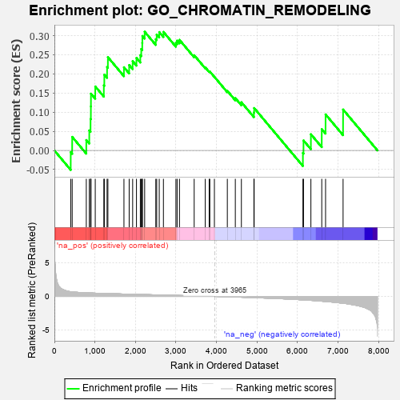
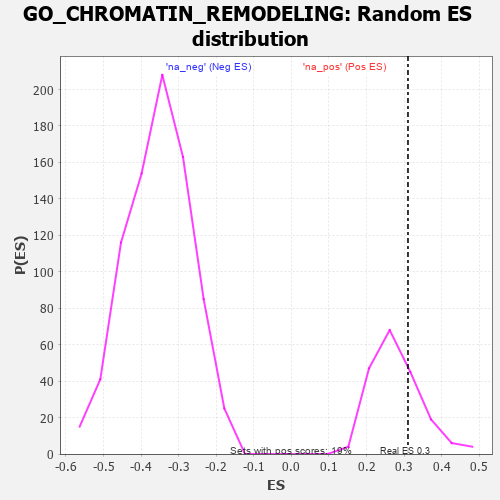

| | | Dataset | 7d |
| Phenotype | NoPhenotypeAvailable |
| Upregulated in class | na_pos |
| GeneSet | GO_CHROMATIN_REMODELING |
| Enrichment Score (ES) | 0.31025925 |
| Normalized Enrichment Score (NES) | 1.1059217 |
| Nominal p-value | 0.27979276 |
| FDR q-value | 0.5999846 |
| FWER p-Value | 1.0 |
Table: GSEA Results Summary

Fig 1: Enrichment plot: GO_CHROMATIN_REMODELING
Profile of the Running ES Score & Positions of GeneSet Members on the Rank Ordered List
| PROBE | GENE SYMBOL | GENE_TITLE | RANK IN GENE LIST | RANK METRIC SCORE | RUNNING ES | CORE ENRICHMENT | | 1 | RRP8 | | | 403 | 0.699 | -0.0044 | Yes |
| 2 | CENPS | | | 439 | 0.666 | 0.0354 | Yes |
| 3 | RERE | | | 787 | 0.536 | 0.0273 | Yes |
| 4 | BAZ1B | | | 861 | 0.516 | 0.0523 | Yes |
| 5 | HMGB2 | | | 892 | 0.507 | 0.0823 | Yes |
| 6 | HDAC5 | | | 900 | 0.506 | 0.1150 | Yes |
| 7 | HCFC1 | | | 902 | 0.506 | 0.1485 | Yes |
| 8 | HMGB4 | | | 1008 | 0.482 | 0.1672 | Yes |
| 9 | RBBP7 | | | 1220 | 0.443 | 0.1701 | Yes |
| 10 | CHD3 | | | 1232 | 0.442 | 0.1980 | Yes |
| 11 | SCMH1 | | | 1300 | 0.428 | 0.2179 | Yes |
| 12 | NRDE2 | | | 1320 | 0.425 | 0.2438 | Yes |
| 13 | KDM5D | | | 1716 | 0.353 | 0.2174 | Yes |
| 14 | CHD4 | | | 1845 | 0.329 | 0.2231 | Yes |
| 15 | TASOR | | | 1931 | 0.316 | 0.2334 | Yes |
| 16 | DMAP1 | | | 2025 | 0.301 | 0.2416 | Yes |
| 17 | INO80 | | | 2120 | 0.288 | 0.2489 | Yes |
| 18 | PSME4 | | | 2143 | 0.285 | 0.2651 | Yes |
| 19 | CHD1 | | | 2168 | 0.282 | 0.2808 | Yes |
| 20 | MORC2 | | | 2171 | 0.281 | 0.2992 | Yes |
| 21 | BAZ2A | | | 2227 | 0.272 | 0.3103 | Yes |
| 22 | KAT2B | | | 2502 | 0.226 | 0.2907 | No |
| 23 | MBD3 | | | 2524 | 0.223 | 0.3029 | No |
| 24 | KDM4B | | | 2587 | 0.215 | 0.3093 | No |
| 25 | KDM6A | | | 2690 | 0.200 | 0.3098 | No |
| 26 | SMYD1 | | | 2998 | 0.150 | 0.2810 | No |
| 27 | BRDT | | | 3028 | 0.145 | 0.2870 | No |
| 28 | HDAC1 | | | 3086 | 0.138 | 0.2890 | No |
| 29 | TOP1 | | | 3449 | 0.084 | 0.2489 | No |
| 30 | DAXX | | | 3722 | 0.038 | 0.2171 | No |
| 31 | CHD1L | | | 3819 | 0.024 | 0.2067 | No |
| 32 | KDM5C | | | 3835 | 0.022 | 0.2062 | No |
| 33 | VPS72 | | | 3948 | 0.003 | 0.1923 | No |
| 34 | RSF1 | | | 4267 | -0.053 | 0.1557 | No |
| 35 | ERCC6 | | | 4464 | -0.087 | 0.1368 | No |
| 36 | GATA3 | | | 4614 | -0.120 | 0.1260 | No |
| 37 | CBX3 | | | 4923 | -0.183 | 0.0993 | No |
| 38 | ATRX | | | 4929 | -0.184 | 0.1109 | No |
| 39 | BAHD1 | | | 6132 | -0.514 | -0.0066 | No |
| 40 | RNF8 | | | 6147 | -0.518 | 0.0261 | No |
| 41 | ZNFX1 | | | 6329 | -0.588 | 0.0423 | No |
| 42 | TPR | | | 6597 | -0.709 | 0.0557 | No |
| 43 | PAK1 | | | 6691 | -0.757 | 0.0942 | No |
| 44 | RBBP4 | | | 7123 | -1.010 | 0.1070 | No |
Table: GSEA details [plain text format]

Fig 2: GO_CHROMATIN_REMODELING: Random ES distribution
Gene set null distribution of ES for GO_CHROMATIN_REMODELING